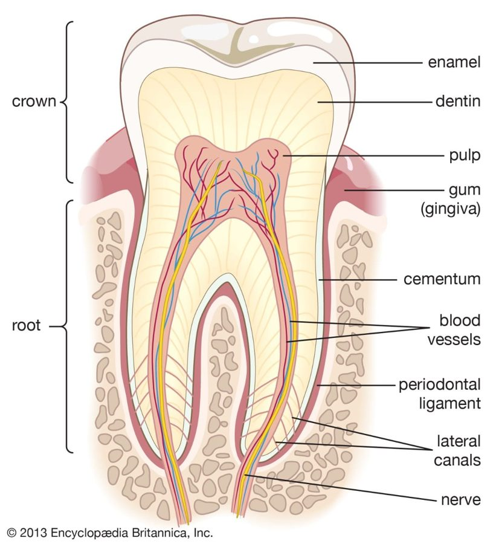
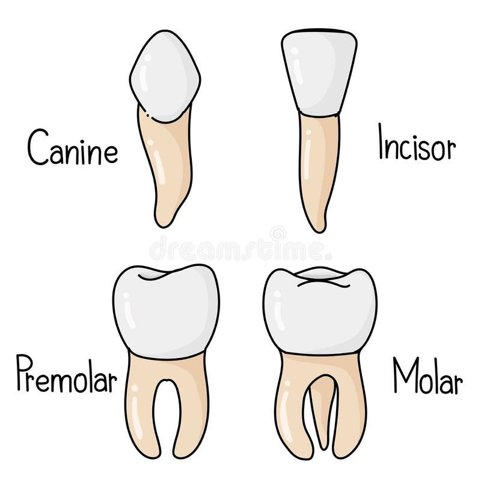
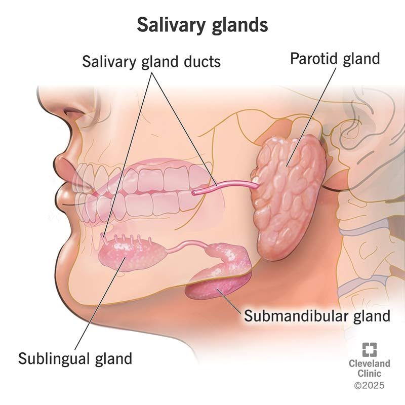
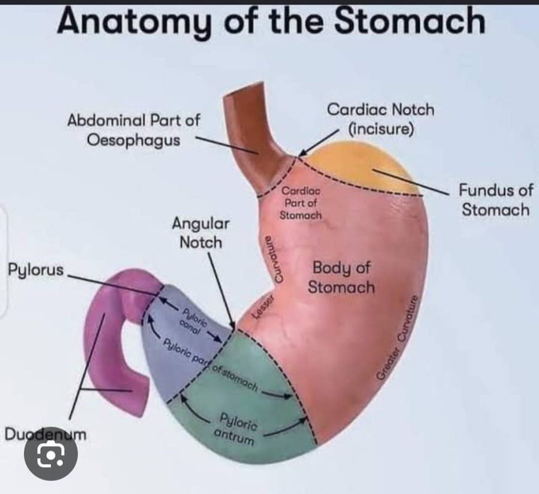
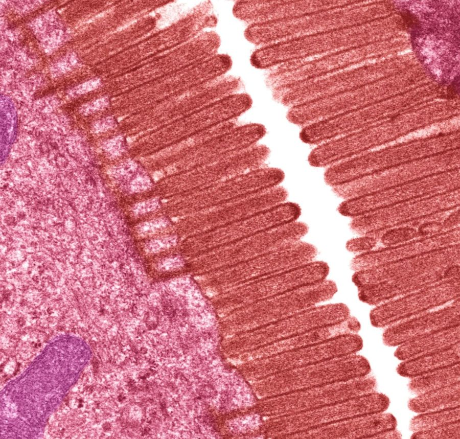
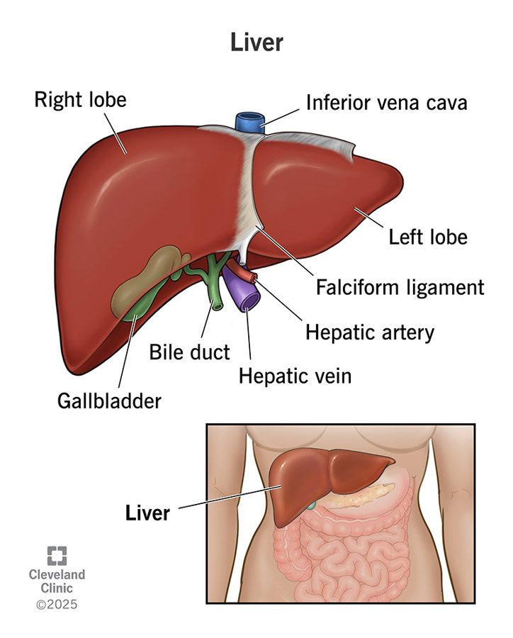
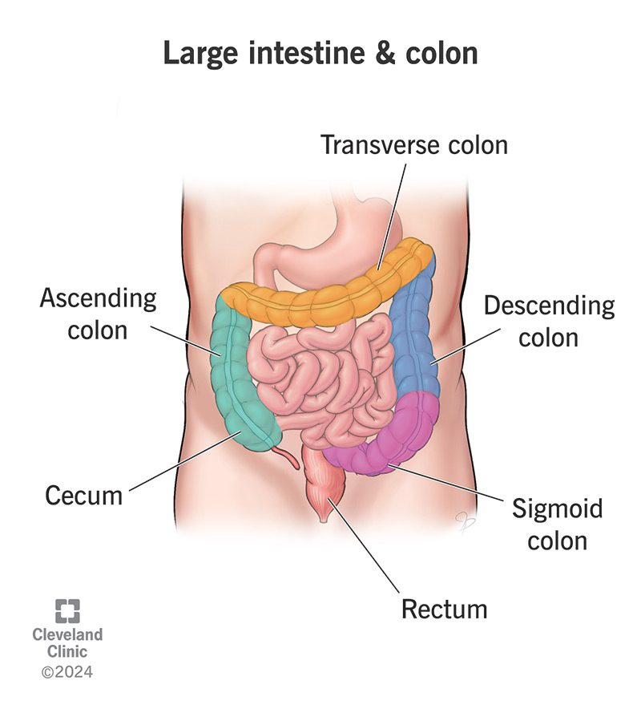

The Digestive System: One Tube and Its Helpers
A long tube from mouth to anus does the work; a few glands pour juices into it. Food becomes small molecules the blood can carry to every cell.
| Your syllabus line | Where it is on this page |
|---|---|
| Gross anatomy: GI tract, mouth, pharynx, stomach, intestines | 1 (this section), 2, 3, 4, 5, 8 |
| Physiology of digestion, acid production, gastric juices | 4 (stomach, HCl, gastric juice), 7 (digestion and absorption) |
| Salivary glands, pancreas, liver | 2 (salivary glands), 6 (pancreas, liver, bile) |
| Relevance to yogic practices, asanas, pranayama | 9 (disorders and yoga) |
- Mouth – chewing, mixing with saliva, bolus formation; starch digestion begins.class
- Salivary glands – three pairs pour saliva into the mouth (accessory).class
- Pharynx and oesophagus – the passage; peristalsis pushes the bolus down (~25 cm).class
- Stomach – J-shaped bag; stores, churns, starts protein digestion with acid and pepsin.
- Liver – largest internal gland; makes bile (accessory).
- Gallbladder – stores bile until fat arrives.
- Pancreas – sends enzyme-rich juice and bicarbonate into the duodenum.
- Small intestine – 5–6 m; duodenum, jejunum, ileum; main site of digestion and absorption.
- Large intestine – absorbs water and electrolytes, forms faeces, houses gut bacteria.
- Rectum and anus – store and release faeces (elimination).
1AAlimentary canal vs accessory organs
The tube food passes through: mouth → pharynx → oesophagus → stomach → small intestine → large intestine → rectum → anus.class
They help digestion but food never enters them: teeth, tongue, salivary glands, liver, gallbladder, pancreas.class
1BThe five activities
| Activity | Meaning | Example |
|---|---|---|
| Ingestion | Taking food or water into the mouth | Eating, drinking |
| Digestion | Breaking complex food into simple substances (mechanical + chemical) | Chewing; amylase on starch |
| Absorption | Nutrients move from the gut into blood (or lymph) | Glucose through villi |
| Assimilation | Cells take up and use the absorbed nutrients | Glucose burned for energy |
| Elimination | Undigested material leaves as faeces (defaecation) | Rectum → anus |
Food is mostly big molecules (starch, protein, fat) that cannot cross the gut wall. The body therefore runs a disassembly line: each station does one job, the right chemical is added just where it is needed, and the pieces are only taken into the blood once they are small enough (glucose, amino acids, fatty acids). Everything that is not broken down or absorbed simply travels to the end and leaves.
The tube itself is a conveyor belt with a wall of smooth muscle. The muscle squeezes in coordinated waves (peristalsis) so the contents always move forward.
I-D-A-A-E: Ingest → Digest → Absorb → Assimilate → Eliminate.
Tract in order: “My Perfect Old Sports Shirt Looks Really Awesome.” (Mouth, Pharynx, Oesophagus, Stomach, Small, Large, Rectum, Anus – a made-up sentence.)
Absorption ≠ assimilation. Absorption = nutrients enter the blood. Assimilation = cells use them. And liver and pancreas are not part of the tube: they are accessory glands that deliver juices into it.
Answer in five steps: ingestion → digestion (mechanical in the mouth and stomach, chemical by saliva, gastric juice, pancreatic juice, bile and intestinal juice) → absorption (mainly in the small intestine) → assimilation → elimination of the undigested residue as faeces.
“Your gut is a nine-metre tube. Food goes in, gets chewed, then stirred in an acid bath in the stomach, and then in the small intestine juices from the liver and pancreas chop it into tiny pieces. Those pieces go through the gut wall into the blood. What is left goes on to the large intestine, which takes back the water, and the rest leaves as stool.”
Go deeper · the four layers of the gut wall
Mucosa (innermost, moist lining with secretory and absorptive cells) → submucosa (soft, highly vascular connective tissue with nerves) → muscularis externa (inner circular + outer longitudinal muscle) → serosa (outer covering).PDF Circular muscle narrows the tube; longitudinal muscle shortens it; together they make peristalsis. The stomach adds a third, oblique layer (section 4).
Nerve supply. The whole tract is supplied by both divisions of the autonomic nervous system, and their actions are mostly opposite: the parasympathetic supply (vagus nerves and sacral nerves) increases secretion and movement, the sympathetic supply decreases them. This is the physiology behind “rest and digest” in section 9.R&W
Mouth, Teeth, Tongue & Saliva
Three things happen together in the mouth: chewing, mixing with saliva, and shaping a bolus. Starch digestion starts here.
2AThe mouth and palate
- Mastication – teeth break food into small pieces.class
- Mixing with saliva – softens food and begins starch digestion.class
- Bolus formation – the tongue collects the chewed food into a soft mass and pushes it toward the pharynx.class
- Lined throughout with mucous membrane.PDF
- Hard palate – bony, rigid, in front.
- Soft palate – muscular and movable, behind.
- Uvula – the hanging end of the soft palate. Together they stop food entering the nasal cavity.class
2BTeeth

- Enamel – covers the crown; the hardest tissue in the body.class
- Dentin – the bulk of the tooth; hard, ivory-like.class
- Pulp cavity – blood vessels, connective tissue and nerves; they enter through canals in the root.class
- Cementum – covers the root; the periodontal ligament anchors it in the jaw socket.general
- Crown / neck / root / apex – crown is the visible part; neck lies between crown and root; root sits in the socket; apex is the root tip.class
- Incisors – 8 · cut or bite.
- Canines – 4 · tear (the sharpest).
- Premolars – 8 · grind and crush.
- Molars – 12 · grind and crush.
- Total 32 in the permanent set (class notes). Milk teeth: 20, which fall out and are replaced.

Source note. The PDF writes the dental formula as 2·1·2·3 and labels it “upper jaw / lower jaw”. That formula is for one half of each jaw: (2+1+2+3) × 2 sides × 2 jaws = 32. The class notes’ counts (8+4+8+12 = 32) agree with it. Milk teeth have no premolars (formula 2·1·0·2 per half jaw = 20).general
| Term | Meaning | Applies to humans? |
|---|---|---|
| Monophyodont | Teeth appear once in a lifetime | No |
| Diphyodont | Teeth appear twice: milk then permanent | Yes |
| Heterodont | Teeth of four kinds with different shapes and jobs | Yes |
2CTongue
- A muscular organ on the floor of the mouth, attached at the back and free at the front.class
- Mixes food with saliva, pushes the bolus during swallowing (deglutition), carries taste buds, helps in speech.class
- Taste buds sense sweet, salt, sour, bitter; food chemicals must be dissolved in saliva to reach them.PDF
- Tonsils (lymphatic tissue) lie at the back of the mouth on either side of the tongue.PDF
2DSalivary glands and saliva

- Parotid – just below and in front of the ear; largest; duct = Stensen’s duct.PDF
- Submandibular – under the angle of the jaw; duct (Wharton’s) opens on the floor of the mouth.PDF
- Sublingual – under the tongue, in front of the submandibular gland; smallest; several small ducts (of Rivinus).PDF
- All three are exocrine glands: they secrete through ducts.PDF
- Composition: water 99.5%, solids 0.5% (amylase, lipase, lysozyme, mucin; sodium, calcium, potassium).PDF
- Volume: about 1–1.5 L a day (PDF 1000–1500 mL; R&W 1.5 L).PDF
- pH 6–7.class
- Salivary amylase starts starch digestion; saliva lipase matters mainly in newborns.PDF
- Lubrication – for swallowing and speech.
- Digestion – amylase on starch.
- Defence – cleansing action; lysozyme attacks microbes.
- Taste – dissolves food chemicals for the taste buds.
- Protection of the mouth lining; gustin supports taste-bud development.PDF
Source note. Class notes give saliva pH 6–7; the PDF just says “acidic in nature”. Ross & Wilson gives 5.8–7.4 (higher when the flow is faster), with salivary amylase working best at pH 6.8.R&W So write “pH 6–7, slightly acidic”. The class line “salivary glands help to control ANS” is reversed: the autonomic nervous system controls the glands.
Saliva flows because of a reflex, with the salivation centre in the medulla. In the unconditioned (normal) reflex, food in the mouth triggers chewing and taste receptors, signals go to the medulla, and the glands respond. In the conditioned (learned) reflex, the sight, smell, sound or even the thought of food is enough. Both run through the autonomic nervous system. Parasympathetic stimulation gives profuse, watery saliva with little enzyme; sympathetic stimulation gives a small amount of thick saliva rich in organic matter.R&WclassPDF
Teeth 8-4-8-12: Incisor 8 bite, Canine 4 tear, Premolar 8 and Molar 12 grind. 8+4+8+12 = 32.
Glands: Parotid = Par (ear), Submandibular = sub jaw, Sublingual = sub tongue.
Chewing is mechanical, amylase is chemical. Teeth only make the pieces smaller. Digestion by chemistry begins when salivary amylase starts splitting starch into maltose. It keeps working during swallowing and inside the stomach until the gastric acid (pH 1.5–1.8) mixes in and stops it.R&W
“Name the salivary glands”: parotid, submandibular, sublingual. “Function of saliva”: lubrication, starch digestion by amylase, antimicrobial action, taste. “Name the types of teeth”: incisor, canine, premolar, molar (32 in adults).
“Teeth cut and grind, the tongue stirs, and three pairs of glands add saliva. Saliva wets the food, starts breaking starch into sugars (that is why bread tastes sweeter the longer you chew), and carries flavour to the taste buds. The tongue then shapes it into a soft ball and pushes it back to be swallowed.”
Go deeper · class aside on elephants
Class mentioned that an elephant keeps getting new teeth until death. More exactly, elephants replace their huge grinding molars several times (up to six sets) across a lifetime, and when the last set wears down the animal can no longer feed.general Humans, by contrast, get just two sets (diphyodont).
Saliva also contains immunoglobulins (antibodies) and blood-clotting factors, besides amylase, lysozyme, mucus and mineral salts.R&W
Pharynx & Oesophagus: Swallowing and Peristalsis
The pharynx is a crossroads shared with breathing; the oesophagus is a 25 cm muscular tube that squeezes the bolus down to the stomach.
- Nasopharynx – behind the nasal cavity, above the soft palate; for respiration only.class
- Oropharynx – from the soft palate down to the epiglottis; carries food and air.class
- Laryngopharynx – leads on into the oesophagus.class
- Epiglottis – the lid that closes the airway while swallowing.general
- Oesophagus – muscular tube, ~25 cm; behind the trachea.
- Trachea – the windpipe, in front of the oesophagus.
- A funnel-shaped muscular passage shared by the respiratory and digestive systems, from the nasal cavity to the oesophagus.class
- Three regions: nasopharynx, oropharynx, laryngopharynx. The Eustachian tube opens into it.PDF
- ~25 cm muscular tube from pharynx to stomach.class
- Moves food by peristalsis: coordinated wave-like contractions.class
- Secretes mucus only; no enzymes, no absorption.PDF
- A muscular sphincter at its lower end guards the opening into the stomach.PDF
3AWhat happens when you swallow
| Stage | What happens | Control |
|---|---|---|
| 1 · Mouth | The tongue pushes the bolus back toward the pharynx. | Voluntary |
| 2 · Pharynx | The soft palate lifts to seal the nasal cavity; the larynx rises and the epiglottis covers the airway; breathing pauses briefly. | Reflex |
| 3 · Oesophagus | Peristaltic waves carry the bolus down; the lower sphincter relaxes to let it into the stomach, then closes. | Involuntary |
Three stages of swallowing as in Ross & Wilson;R&W the class notes give the regions, the length, peristalsis and the sphincter.
Peristalsis works like squeezing toothpaste along a tube: the muscle ring behind the bolus contracts, the ring in front relaxes, and the wave moves on. It is why you can swallow lying down or even upside down: gravity is not what moves food. The same wave pattern then carries food along the whole gut.
The sphincter at the lower end is a one-way valve. If it loosens, stomach acid rises back up, which is GERD (section 9).class
N-O-L: Naso (nose, air only) → Oro (mouth, food + air) → Laryngo (larynx, leads to oesophagus).
Class notes label the oropharynx as “food and air” and the nasopharynx as “near respiration”. In practice, mouth-breathing also sends air through the oropharynx. And the oesophagus does not digest or absorb: it only transports.
“What is peristalsis?” – wave-like muscular contractions of the gut wall that push food forward; first seen in the oesophagus (YHB glossary: rhythmic coordinated contractions of smooth muscle that move contents through the tract).YHB “Length of the oesophagus?” – about 25 cm.
“The throat is a shared crossroads for air and food. When you swallow, a little flap, the epiglottis, closes the windpipe so the food goes down the food pipe. The food pipe then squeezes in waves, like a hand squeezing toothpaste, and delivers the ball of food to the stomach.”
Go deeper · why the respiratory notes matter here
What keeps acid down. Four things stop reflux: the lower (cardiac) sphincter; the stomach’s attachment to the diaphragm; a sharp angle between oesophagus and stomach; and extra sphincter tone when abdominal pressure rises, helped by the diaphragm fibres pinching the oesophagus. A hiatus hernia (part of the stomach slipping up through the diaphragm) weakens this barrier.R&W
The epiglottis and the C-shaped tracheal rings are described on the Respiratory page (air passages). The open back of those rings lets the oesophagus bulge forward slightly as a bolus passes.general
Stomach & Gastric Juice
A stretchy J-shaped bag that stores, churns, and starts protein digestion, using acid that its own mucus layer keeps from harming it.
4AGross anatomy

- Cardia (cardiac part) – where the oesophagus enters.class
- Fundus – the upper dome.class
- Body (corpus) – the large central part.class
- Pyloric region – the narrow end leading to the small intestine; the pylorus is the opening, guarded by a sphincter.class
- Rugae – folds of the lining; they flatten as the stomach fills.PDF
- Storage – a reservoir; food stays some hours (PDF: 5–7 h) so enzymes have time.
- Mechanical mixing – class notes call it “like a grinder”.class
- Chemical digestion – protein begins here (pepsin). Limited absorption: water, alcohol and some fat-soluble drugs (R&W; the PDF also lists sugar).PDF
- Three muscle layers: oblique (inner), circular, longitudinal (outer).PDF Extra layer = stronger churning.
- The class note on the layers is incomplete (“inner oblique, outer …”), so use the PDF list.
- Lining has millions of gastric glands opening through gastric pits (~35 million).PDF
4BGastric glands and acid production
- Gastric pit – the opening on the surface; secretions flow out through it into the lumen.
- Mucous (neck) cells – make mucus + bicarbonate, the protective barrier.class
- Parietal (oxyntic) cells – make HCl and intrinsic factor.class
- Chief (zymogen) cells – make pepsinogen, the inactive enzyme.class
- G cells – release the hormone gastrin into the blood to boost gastric secretion.class
Pepsin is a protein-cutting enzyme, and the stomach wall is made of protein. The body avoids self-digestion with three safeguards: (1) pepsin is made as an inactive precursor (pepsinogen) and is only switched on in the lumen by HCl; (2) the surface is coated with a mucus + bicarbonate layer that keeps the acid away from the cells;class (3) the lining cells are replaced quickly.general
Acid has three jobs: activate pepsinogen into pepsin, give the low pH pepsin needs (best around pH 1–2), and kill microbes that came in with the food.PDF
| Product | Cell | What it does |
|---|---|---|
| HCl | Parietal | Converts pepsinogen to pepsin; acid medium; kills microbes |
| Intrinsic factor | Parietal | Binds vitamin B12 so it can be absorbed (in the ileum) |
| Pepsinogen → pepsin | Chief | Proteins → proteoses and peptones (shorter chains) |
| Mucus + bicarbonate | Mucous | Protective barrier against acid and pepsin |
| Gastrin (hormone) | G cells | Stimulates gastric secretion; released into blood |
| Rennin, gastric lipase | (infants) | Milk casein clotting; start of fat digestion |
Source notes. (1) pH: class notes say HCl pH 0–3; the PDF says gastric juice is pH 1–1.5. Ross & Wilson says pepsin works at pH 1.5–3.5. Write “strongly acidic, about pH 1–3” and quote the source in an answer.R&W (2) Gastrin: the PDF lists it among the juice’s organic parts, but it is a hormone carried by blood from G cells (class notes). (3) Intrinsic factor: a garbled PDF line links it to baby fat and casein; the correct role, in both sources’ other lines, is vitamin B12 binding. (4) “Yoga poses help strengthen the mucus barrier” (class notes): no mechanism is given and it is not established physiology. Treat it as a traditional claim and do not write it as fact in an exam.
- Volume 1200–1500 mL a day in the PDF (Ross & Wilson says about 2 L); water 99.5%, solids 0.5%.PDF
- Organic: pepsin, mucus, intrinsic factor. Inorganic: HCl, sodium, calcium.PDF
- Pepsin works best at pH 1.5–3.5. Pepsinogen is switched on by HCl and by pepsin already present, so activation speeds itself up.R&W
- Chyme = bolus + gastric secretions, mixed into a thick semi-fluid acidic paste. The stomach releases it in small squirts through the pylorus.class
4CHow gastric secretion is controlled
| Control | What drives it |
|---|---|
| Nervous | Autonomic reflexes: the sight, smell or thought of food, and chewing and swallowing, send vagal signals that start acid flow before food even arrives.PDF |
| Hormonal | Food in the stomach (especially protein) makes G cells release gastrin, which boosts acid and pepsinogen secretion.class |
“MCP” cells: Mucous → Mucus; Chief → Core enzyme (pepsinogen); Parietal → Power acid (HCl) + intrinsic factor. Parietal = Pours acid, B12 passport.
Pepsinogen is not pepsin. Chief cells release the inactive form; HCl activates it. And HCl does not digest protein itself: it provides the right conditions and switches pepsin on.
Name the three cells and their products; state that HCl converts pepsinogen to pepsin and kills microbes; mention mucus protects the wall; mention intrinsic factor binds B12; mention gastrin and nervous control. Add that chyme leaves through the pylorus into the duodenum.
“The stomach is a stretchy bag that churns your food in acid. Three kinds of cells in its walls make mucus, acid, and an inactive enzyme. The acid wakes the enzyme up, which starts cutting protein. The mucus layer keeps the stomach from digesting itself. After a few hours the mix, now a thick paste called chyme, is released in small amounts into the small intestine.”
Go deeper · how a parietal cell makes HCl
Inside the cell, CO₂ and water form carbonic acid (enzyme: carbonic anhydrase), which splits into H⁺ and HCO₃⁻. A pump (H⁺/K⁺ ATPase) pushes H⁺ into the lumen, Cl⁻ follows, so the lumen gets HCl. HCO₃⁻ goes into the blood, so blood leaving a busy stomach is slightly more alkaline (the “alkaline tide”).general Drugs that block this pump (proton-pump inhibitors) are used for reflux and ulcers.
Three triggers drive the parietal cell: gastrin (G cells), acetylcholine (vagus nerve) and histamine (local cells).general
Three phases of control (Ross & Wilson):R&W cephalic – sight, smell, taste or thought of food act through the vagus; gastric – food in the stomach releases gastrin, which carries on after the meal and is switched off when the antral pH falls to about 1.5; intestinal – chyme reaching the duodenum releases secretin and CCK (together “enterogastrone”), which slow secretion and emptying, most strongly after a fatty meal.
Timing. Secretion peaks about 1 h after a meal and returns to the small “fasting” level after about 4 h. A carbohydrate meal leaves the stomach in 2–3 h; protein stays longer; fat stays longest. Emptying is by strong waves of the pyloric antrum pushing small spurts through the pylorus.R&W
Small Intestine: Digestion and Absorption
5–6 m of coiled tube, folded and fringed with villi so that its inner surface is vast, and fed by juices from the liver, pancreas and its own wall.
5AThree parts
| Part | Facts | Role |
|---|---|---|
| Duodenum | First part, about 25 cm; shortest, widest, C-shaped; joins the stomach at the pyloric sphincter.classPDF | Receives chyme, pancreatic juice and bile (through the hepatopancreatic duct). |
| Jejunum | Middle part; about 2/5 of the remaining length.PDF | Major site of digestion and absorption (class notes). |
| Ileum | Last part; about 3/5; ends at the ileocaecal junction.PDF | Continues absorption; takes up B12 and bile salts.general |
Length: class notes 5–6 m, PDF about 6 m, Ross & Wilson “a little over 5 m”. Write “about 5–6 metres”.R&W
Source note. Class notes say the jejunum is “the major site of digestion and absorption”. Many textbooks say most chemical digestion happens in the duodenum (where the juices arrive) and most absorption in the jejunum. Both agree that “most digestion happens in the small intestine”, which is the safe exam statement.general
5BThe villus: built for absorption
- Microvilli – tiny hair-like folds on each surface cell (the “brush border”); they also carry digestive enzymes.PDF
- Epithelium – a single layer of absorptive cells (enterocytes) covering the villus. Villi are 0.5–1 mm long; microvilli about 1 µm.R&W
- Goblet cell – secretes mucus, which lubricates and protects.PDF
- Capillary network – blood vessels that carry glucose, amino acids, minerals and water-soluble vitamins to the liver.
- Lacteal – a lymph vessel in the centre; it carries absorbed fat (as chylomicrons) into the lymph.class
- Arteriole and venule – the blood supply in and out of each villus.PDF
Absorption depends on surface area. The small intestine is long (5–6 m), its wall is thrown into circular folds, covered in villi, and each cell is fringed with microvilli. Each step multiplies the area many times, so a tube about the size of a garden hose has an absorbing surface commonly compared to a tennis court.general Each villus also has its own blood vessels and lymph vessel so nutrients are carried away at once, which keeps the concentration gradient steep.
5CIntestinal juice (succus entericus)
| Substrate | Enzyme | Product |
|---|---|---|
| Dipeptides | Dipeptidase | Amino acids |
| Maltose | Maltase | Glucose + glucose |
| Lactose | Lactase | Glucose + galactose |
| Sucrose | Sucrase | Glucose + fructose |
| Nucleotides / nucleosides | Nucleotidase / nucleosidase | Nucleosides; sugar + nitrogen base |
| Di- and monoglycerides | Lipases | Fatty acid + glycerol |
Source: PDF. The class note “sucrase” and “peptides → amino acids” refer to these same intestinal-wall enzymes. Mucus and bicarbonate make the juice alkaline and protect the lining. Enterokinase in this juice activates trypsinogen (section 6).PDF
Source note. The PDF lists maltase, lactase, sucrase and the peptidases as parts of the “intestinal juice”. Ross & Wilson is more precise: the juice itself (about 1.5 L a day, pH 7.8–8.0) contains water, mucus, salts and enterokinase; the sugar- and peptide-splitting enzymes sit in the enterocytes (brush border), where the last stage of digestion happens just before absorption. For an exam, the PDF table is fine; this is the detail behind it.R&W
D-J-I – “Don’t Jump In”: Duodenum, Jejunum, Ileum. Duodenum = 25 cm.
Brush border = microvilli = enzymes + surface.
Villi vs microvilli. Villi are visible finger-like projections of the wall; microvilli are tiny projections on each single cell (seen only with an electron microscope). And lacteals carry fat, not glucose: class notes’ line “lacteal – water soluble nutrient” is garbled; capillaries carry water-soluble nutrients.
5–6 m long; three parts (duodenum 25 cm, jejunum, ileum); lined with villi and microvilli that increase the surface; each villus has capillaries and a lacteal; receives bile and pancreatic juice in the duodenum and secretes intestinal juice; completes digestion and absorbs nearly all nutrients.
“The small intestine is the main absorbing organ. It is about five to six metres long, folded and covered in millions of tiny finger-like villi, so its surface is enormous. Juices from the liver and pancreas arrive in the first part. The last bits of chopping are done by enzymes on the surface. Then sugars and amino acids go into the blood, and fats go into the lymph.”
Go deeper · the microvilli under an electron microscope

Also in the wall: crypts (small glands between villi that make intestinal juice and new cells) and Peyer’s patches (lymphoid tissue, most in the ileum).general The PDF’s duodenum breakdown: superior 5 cm, descending 7.5 cm, horizontal 10 cm, ascending 2.5 cm. Males’ small intestine is stated as longer than females’.PDF
Pancreas, Liver, Gallbladder & Bile
Food never enters these organs, yet fat and protein digestion depend on them. They pour their juices into the duodenum through one shared opening.
6APancreas
- Released into the duodenum through the hepatopancreatic duct.PDF
- Contains enzymes for all three major foods, plus bicarbonate to neutralise acidic chyme.YHB
- Protein enzymes are made inactive (zymogens): trypsinogen, chymotrypsinogen, procarboxypeptidase.PDF
- The intestine’s enterokinase turns trypsinogen into trypsin, and trypsin activates the others.PDF
- Carbohydrate: pancreatic amylase → starch to disaccharides (maltose).
- Protein: trypsin, chymotrypsin, carboxypeptidase → peptides (small chains, dipeptides).
- Fat: pancreatic lipase → fatty acids + monoglycerides (class: “fat to lipid”).
- Nucleic acids: nucleases → nucleotides.
Class notes list enzymes by job; the end products are from the PDF.class
Source note. Pancreatic juice is alkaline (pH about 8); with bile it lifts the acid chyme to pH 6–8, the range in which pancreatic amylase and lipase work best.R&W The class line “amylase helps to break carbs to starch” is reversed: amylase breaks starch into smaller sugars. Likewise “protein to amino acid” is completed by the intestinal peptidases; trypsin and its partners leave peptides. The pancreas is also an endocrine gland (insulin, glucagon); the PDF calls it a “heterocrine” (exocrine + endocrine) organ.general
6BLiver

- Largest internal gland; reddish-brown, about 1–1.5 kg, upper right abdomen.classPDF
- Two lobes: large right, small left, split by the falciform ligament.class
- Hepatic lobules – the functional units: hepatic cells radiating around a central vein.PDF
- Regenerates – “liver grows even if we cut”.class
- Gallbladder – a small sac under the liver that stores and concentrates bile.
- Makes bile (its digestive role): emulsifies fat.class
- Glucose control: stores glucose as glycogen (insulin) and releases it again (glucagon).R&W
- Heat: the main heat-producing organ of the body.R&W
- Storage: vitamins A, D, E, K, B12 and others; iron and copper.R&W
- Also makes plasma proteins and detoxifies drugs and alcohol.general
- Breaks down old red cells to make bile pigments (bilirubin).PDF
- About 800–1200 mL a day in the PDF; Ross & Wilson says about 500 mL (textbooks vary). Bile is alkaline (pH about 8).PDFR&W
- No enzymes: bile salts, pigments, cholesterol, fatty acids.PDFYHB
- Emulsification = splitting large fat globules into tiny droplets so lipase can work; bile also helps fat absorption (micelles).PDF
6CThe bile pathway
- Liver cells make bile continuously.
- Hepatic ducts (right and left) collect it and join into the common hepatic duct.
- Cystic duct → gallbladder – bile is stored and concentrated between meals.
- Common bile duct – formed by hepatic duct + cystic duct; carries bile to the duodenum.
- Pancreatic duct joins it; the sphincter of Oddi guards the shared opening into the duodenum.PDF
- Duodenum – receives bile and pancreatic juice. Fatty food makes the gut hormone CCK (cholecystokinin) squeeze the gallbladder and relax the sphincter; secretin boosts bicarbonate.PDF
Fat does not mix with water, and the gut is watery. Bile works like washing-up liquid on a greasy pan: it breaks big fat blobs into tiny droplets, giving lipase a far larger surface to work on. That is why bile is needed but is not an enzyme. The gallbladder is simply the storage tank: the liver makes bile all day, but the gut needs it only after a fatty meal.
The pancreas does the opposite chemical job: it brings the enzymes and a base (bicarbonate). Acidic chyme would stop these enzymes working, so bicarbonate raises the pH to about neutral–alkaline in the duodenum.
Bile path: Liver → Hepatic duct → Gallbladder → Common bile duct → Duodenum. (“Let Him Get Coffee Daily.”)
Pancreas A-P-L-N: Amylase, Proteases, Lipase, Nucleases.
Bile has no enzymes. It emulsifies fat and helps absorption. The enzyme that digests fat is lipase (mainly pancreatic). And the gallbladder stores bile; it does not make it.
“The liver produces bile, which emulsifies fats in the small intestine.” That is the class-notes answer. Add one extra for safety if marks allow: it also processes absorbed nutrients and detoxifies the blood. Also be ready for “bile pathway” (a diagram question) and “functions of pancreatic juice”.
“Two helper glands feed the first part of the small intestine. The pancreas sends enzymes that break down starch, protein and fat, and a base that cancels the stomach acid. The liver makes bile, a kind of detergent, stored in the gallbladder until a fatty meal arrives. The bile breaks fat into tiny droplets so the enzymes can reach it.”
Go deeper · more liver anatomy
The liver has a double blood supply: the hepatic portal vein brings nutrient-rich blood from the gut, and the hepatic artery brings oxygenated blood; the hepatic veins carry blood out to the inferior vena cava.general This is why everything absorbed by the capillaries passes through the liver first.
Recycling of bile salts. Most bile salts are reabsorbed in the terminal ileum and return to the liver in the portal vein (the enterohepatic circulation), so a small pool is reused many times a day. Bilirubin from old red cells (broken down by Kupffer cells) leaves in bile; gut bacteria turn it into stercobilinogen, which colours the faeces brown. Excess bilirubin in the blood causes jaundice.R&W
Textbooks describe four lobes (right, left, caudate, quadrate); the class notes and PDF use the simpler right and left. Each lobule is wrapped in a thin capsule (Glisson’s capsule, PDF).
Digestion of Nutrients & Absorption
Which juice cuts which food, what the final products are, and how each one crosses into the blood or lymph.
7AThe big three: start to finish
| Food | Digested by | Final product |
|---|---|---|
| Carbohydrate | Salivary amylase → pancreatic amylase → disaccharidases (maltase, sucrase, lactase) | Glucose (and other monosaccharides) |
| Protein | Pepsin (stomach) → pancreatic proteases (trypsin, chymotrypsin, carboxypeptidase) → intestinal peptidases | Amino acids (and small peptides) |
| Fat | Bile salts (emulsify) + lipases (mainly pancreatic) | Fatty acids + monoglycerides |
Source: class notes table; intermediate steps from the PDF.classPDF
7BWhere does each digestive step happen?
| Place | Juice | What it does |
|---|---|---|
| Mouth | Saliva | Salivary amylase starts starch → sugars (about 30% of starch, PDF); lysozyme kills microbes |
| Stomach | Gastric juice | HCl + pepsin: protein → proteoses and peptones; salivary amylase is stopped once acid mixes inR&W |
| Duodenum | Bile + pancreatic juice | Fat emulsified; pancreatic amylase digests cooked and uncooked starch; trypsin and chymotrypsin (activated by enterokinase) cut polypeptides to di- and tripeptides; lipase makes fatty acids and monoglycerides |
| Small intestine wall | Intestinal juice | Final splitting of disaccharides and dipeptides at the brush border |
| Large intestine | No enzymes | Water absorption; bacteria ferment leftovers |
7CHow each nutrient crosses into the body
| Nutrient | Route into the cell | Then to… |
|---|---|---|
| Glucose | Sodium-dependent transport (carrier moves glucose with sodium) | Blood capillary |
| Amino acids | Carrier-mediated transport | Blood capillary |
| Water | Osmosis, following absorbed solutes | Blood |
| Fat | Fatty acids and monoglycerides + bile salts → micelles → into epithelial cells → repackaged as chylomicrons | Lacteal → lymph → blood |
From the class notes and PDF. The PDF also notes that small amounts of glucose and amino acids move by simple diffusion, some by facilitated transport, and that active transport uses energy.classPDF
7DFollowing a fat molecule
Every nutrient follows one rule: the cell wall of the gut accepts only small, usable molecules. Water-soluble ones (glucose, amino acids) go through the epithelium straight into capillaries and travel to the liver. Fats are different: they cannot dissolve in blood, so they are carried in tiny protein-coated packages called chylomicrons that enter the lymph first and reach the blood later.
| Region | Absorbs (PDF) |
|---|---|
| Mouth | Certain drugs |
| Stomach | Water, sugar, alcohol (limited) |
| Small intestine | All digested food, minerals, vitamins |
| Large intestine | Water and some drugs |
C-P-F → G-A-F: Carbs → Glucose; Protein → Amino acids; Fat → Fatty acids + monoglycerides.
“Fat flies through lymph.” Everything else rides the blood.
Digestion ≠ absorption. Digestion is chemical splitting; absorption is crossing the wall. Also most absorption is in the small intestine, not the stomach or colon; the stomach absorbs only water, sugar, alcohol; the colon only water.
Walk the food: mouth (amylase, 30% starch) → stomach (HCl, pepsin, proteoses/peptones, chyme) → duodenum (bile, pancreatic juice) → small intestine (intestinal juice, absorption by villi) → large intestine (water). Finish with final products: glucose, amino acids, fatty acids + glycerol. Keep the three-row table from 7A as the spine of the answer.
“Starch starts to break down in the mouth, protein in the stomach, and everything else in the small intestine. In the end starch becomes glucose, protein becomes amino acids and fat becomes fatty acids. Glucose and amino acids go through the gut wall into blood; fat takes a side route through the lymph first.”
Go deeper · how glucose follows sodium
Cells on the gut surface pump sodium out on their blood side, keeping the inside low in sodium. A carrier on the lumen side then lets sodium drift in and drags glucose along with it (secondary active transport); glucose leaves on the blood side by facilitated diffusion. This is why the class notes call it “sodium-dependent”. Oral rehydration solutions use the same trick.general
Large Intestine, Rectum & Elimination
No enzymes, no villi: the large intestine dries the leftovers into faeces, lets friendly bacteria work on them, and stores them until you go.

- Caecum – a small pouch where the ileum joins at the ileocaecal valve (one-way).PDF
- Appendix – narrow finger-like outgrowth of the caecum with lymphoid tissue; inflammation = appendicitis.class
- Colon – ascending → transverse → descending → sigmoid (pelvic) colon; an inverted U.PDF
- Rectum – stores faeces temporarily.class
- Anus – ends the tract; guarded by sphincters.PDF
- Absorbs water and electrolytes.class
- Forms and stores faeces.class
- Gut microbiota – bacteria metabolise undigested substances.class They make vitamin K and folic acid, and produce gas (hydrogen, CO₂, methane) from fermenting unabsorbed carbohydrate.R&W
- Secretes only mucus, no enzymes.PDF
- Stretch of the rectum triggers the defaecation reflex: rectal contraction + relaxation of the anal sphincter.class
- The anal sphincters are partly voluntary, so we can delay it.PDF
- Waves of the colon and rectum push the faeces out. The abdominal muscles contract and the diaphragm descends, raising abdominal pressure (Valsalva), which helps.R&W
- Babies empty by reflex; by age 2–3 the brain can override it through the external sphincter. Repeatedly ignoring the urge may lead to constipation.R&W
By the time the contents reach the caecum they are a watery mix of waste and leftovers. The colon moves them slowly so that water has time to be pulled back into the body; the longer the contents stay, the drier the stool. Fast transit means little water is absorbed (diarrhoea); slow transit means too much is taken (hard stool, constipation).general That link is what the yoga section (9) uses.
Colon order: Ascending (up, right) → Transverse (across) → Descending (down, left) → Sigmoid (S-bend) → Rectum → Anus. “All The Dishes Still Remain Around.”
The colon does not do ordinary peristalsis. About twice an hour a strong mass movement sweeps the contents from the transverse colon toward the sigmoid colon; it is often triggered by food entering the stomach (the gastrocolic reflex), which is why many people feel the urge after a meal.R&W The PDF’s “wave-like movement” refers to this.
Large ≠ longer. The large intestine is shorter (~1.5 m) but wider than the small intestine (5–6 m). It is “large” because of its width. It does no digestion: it absorbs water and stores waste.
“Functions of the large intestine”: absorption of water and electrolytes; formation and storage of faeces; gut microbiota. “What is appendicitis?” – inflammation of the vermiform appendix.
“The large intestine takes back water from what is left, so a runny leftover becomes solid stool. Friendly bacteria live here and break down some of what we could not digest. The stool waits in the rectum, and when it stretches, the body sends the signal to go.”
Go deeper · what the gut bacteria do
The colon holds trillions of bacteria. They ferment fibre into short-chain fatty acids, which feed the colon lining, and make vitamin K. A healthy mix also crowds out harmful microbes. Antibiotics can upset this balance and cause diarrhoea.general The class notes only state that they “metabolise undigested substances”.
Digestive Disorders & Yoga Practice
The 10-mark question and the class disorder list in one place. Tags show what your teacher said, what the Yoga & Human Body notes say, and what is added reasoning to confirm.
Plan a five-part answer, about two marks each: (1) the digestive process in brief → (2) stress and the nervous system (rest and digest) → (3) abdominal movement and posture → (4) specific problems and the asanas linked to them → (5) conclusion with a caution that these are supportive, not a cure.
How to read the tags. class = stated in your class notes. YHB = Yoga & Human Body notes. R&W = Ross & Wilson (your reference book; also used for “general physiology”). general = standard physiology. FAY = Functional Anatomy of Yoga (your reference book; anatomy of the postures only). added = reasoning I added to explain a link; not stated by your teacher, so confirm before you write it in an exam. The YHB notes say: “exam answers should distinguish traditional rationale from established physiology.”
9AFive links between yoga and digestion
| Link | What it means | Source |
|---|---|---|
| 1 · Stress and the autonomic system | Stress influences digestion. Parasympathetic activity is “rest and digest”: it raises digestive activity; sympathetic activity lowers it. The vagus nerve links brain, heart, lungs and gut. Slow breathing and relaxation may raise vagal influence, though responses differ. | YHB |
| 1b · What stress does to the gut | The two autonomic divisions work in opposition on the gut: parasympathetic raises secretion and motility, sympathetic lowers them. In stress, adrenaline and noradrenaline narrow the blood vessels of the digestive tract; poor blood flow and stress hormones are listed as factors in peptic ulcer (along with weak mucus and slow cell replacement). Anxiety also leads to swallowed air and gas. | R&W |
| 2 · Gut–brain interaction | Stress and poor meal timing are the main causes of acidity in class notes; IBS is a “gut–brain interaction disorder”, so relaxation techniques are used. | class |
| 3 · Abdominal pressure and movement | The YHB list of what kriyas may influence includes the GI tract, mucosal secretions, peristalsis, abdominal pressure and autonomic activity. | YHB |
| 4 · Posture on the abdomen | Anatomy fact: everyone’s abdomen is more compressed in twisting postures, which also pushes breath upward into the chest.FAY Twists, forward bends, knee-to-chest poses and back bends therefore change abdominal pressure. That this may massage the gut and encourage movement of gas and stool is the added reasoning; no source here proves it. | added |
| 5 · Traditional frame | Samana prana is traditionally linked to digestion and assimilation, apana to downward, eliminative functions; in Ayurveda, balance of agni (digestive fire) is part of health. | YHB |
9BThe class disorder list
Your teacher’s answer format: explain the disease → symptoms → how yoga supports.
| Disorder | Symptoms | Yoga support (class) | Possible rationale |
|---|---|---|---|
| GERD (gastro-oesophageal reflux) – the lower sphincter loosens and acid comes up; “a higher form of acidity”; cause: stress or irregular meals. A hiatus hernia is another cause.R&W | Heartburn, chest congestion, throat infection | Pavanamuktasana, Janu Shirshasana, hand in–out movement, cooling pranayama, meditation to release stress | added Stress release and calmer breathing address the stated causes; gentle abdominal poses relieve trapped gas. |
| Gastritis – inflammation of the stomach lining, upper abdomen. Textbook: too little mucus against acid; causes include regular aspirin or anti-inflammatory drugs.R&W | Bloating, vomiting tendency | Vajrasana after food | added Vajrasana is a seated pose that is traditionally done after meals; no mechanism was given in class. |
| Peptic ulcer – open sore in the stomach or first part of the duodenum. Textbook: acid overcomes the mucus barrier; Helicobacter pylori, anti-inflammatory drugs, smoking and stress are risk factors.R&W | Burning abdominal pain, nausea, indigestion | Cooling pranayama, Ardha Matsyendrasana, Pada Hastasana, yoga nidra, cyclic meditation | added Relaxation practices target stress, which narrows gut blood vessels (link 1b); cooling breaths are traditionally chosen for “heat”. Check with a teacher before twisting poses in an active ulcer. |
| Constipation – difficulty passing stools | (not listed in class notes) | Chakki Chalanasana, Pavanamuktasana, Nadi Shuddhi | added Abdominal compression and churning movements may encourage bowel movement; Nadi Shuddhi calms the nervous system. |
| Diarrhoea – frequent loose stools | (not listed) | Varuna Mudra, breathing | added Varuna is the traditional “water” mudra; breathing practices calm the autonomic system. Dehydration is the real danger, so fluids come first. |
| IBS – gut–brain interaction disorder | Bloating, abdominal pain, diarrhoea or constipation | Relaxation techniques to relax the autonomic nervous system | class The teacher’s own rationale is the autonomic calm (links 1–2). |
| Obesity | (not listed) | Surya Namaskar; also improves mental health | added A sustained, whole-body sequence raises energy use; mental-health benefit is the class note. |
| Liver disorders: fatty liver (excess fat in liver cells; insulin resistance, sugar, alcohol, obesity); hepatitis (inflammation; autoimmune, alcohol, medicine side effects). Textbook: viral infection is the commonest cause of acute hepatitis.R&W | (not listed) | No yoga link given in class | added Only the general point that yoga supports weight and lifestyle change. Write the causes; do not invent asanas. |
Source notes. (1) The class notes give no symptoms for constipation, diarrhoea, obesity or liver disorders; add them only from a textbook (for example hard or infrequent stool; watery stool; excess body fat) and tag them general. (2) The class note “Yoga poses help strengthen the mucus barrier” has no mechanism behind it (see section 4); do not state it as fact. (3) Hepatitis causes: the class list is autoimmune, alcohol and drugs; Ross & Wilson also puts viruses first, so add “viral infection” in an exam. (4) “Hand in–out movement” is written exactly as in your notes; ask your teacher which practice it is (a simple hand stretch-breathing movement is likely, but that is a guess).
9CPractices that appear across the notes
- Pavanamuktasana – lying, knees drawn to chest; compresses the abdomen. class GERD, constipation.
- Paschimottanasana – seated forward bend.class General list.
- Janu Shirshasana – one-leg forward bend. class GERD.
- Pada Hastasana – standing forward bend. class Peptic ulcer.
- Ardha Matsyendrasana – half spinal twist. class Peptic ulcer.
- Bhujangasana – cobra; back bend that stretches the abdominal wall.class General list.
- Vajrasana – sitting on the heels. class After food, gastritis.
- Chakki Chalanasana – “grinding the mill”. class Constipation.
- Surya Namaskar – sun salutation. class Obesity.
Posture descriptions in short are general knowledge.general
- Nadi Shuddhi – alternate-nostril breathing. class Constipation.
- Bhramari – humming breath. class General list.
- Cooling pranayama – class GERD, ulcer. The usual examples are Sheetali and Sheetkari (added names; confirm which your teacher means).
- Yoga nidra, cyclic meditation – deep relaxation. class Ulcer.
- Varuna mudra – class Diarrhoea.
- Yogic breathing – class General list.
- Shatkarma include dhauti, basti, neti, trataka, nauli, kapalabhati; texts and teachers may classify and describe them differently.YHB
- Uddiyana bandha – “abdominal lock”: abdominal wall activation, altered intra-abdominal pressure, diaphragm movement.YHB
- These are advanced practices usually learned with a teacher and kept for an empty stomach; people with ulcers, hernia, pregnancy or recent surgery are usually told to avoid abdominal locks and churning.added Confirm with your teacher.
Yoga helps digestion in two broad ways: it calms the nervous system so the gut works in its “rest-and-digest” mode, and its postures and breathing move and massage the abdomen. The first is supported by the YHB notes on the parasympathetic system; the second is the classical rationale and an “added reasoning” link. A good exam answer says both, and names the asanas your teacher linked to each problem.
“Twist, fold, press”: twist (Ardha Matsyendrasana), fold (Paschimottanasana, Janu Shirshasana, Pada Hastasana), press (Pavanamuktasana), plus arch (Bhujangasana) and sit (Vajrasana).
Yoga supports; it does not cure. Tell the examiner these practices are supportive and that ulcers, hepatitis or bleeding need medical care.
1. Digestion = ingestion, digestion, absorption, assimilation, elimination. 2. Stress disturbs digestion; yoga activates the parasympathetic (rest and digest) through relaxation, breathing and meditation. 3. Postures (twists, forward bends, knee-to-chest, back bends) change abdominal pressure and may aid motility. 4. Problems and practices: GERD (Pavanamuktasana, Janu Shirshasana, cooling pranayama), gastritis (Vajrasana after food), ulcer (cooling pranayama, Ardha Matsyendrasana, yoga nidra), constipation (Chakki Chalanasana, Pavanamuktasana, Nadi Shuddhi), diarrhoea (Varuna Mudra, breathing), IBS (relaxation), obesity (Surya Namaskar). 5. Supportive, learned from a teacher, with regular meals.
“Your gut digests best when you are relaxed, and worst when you are stressed. Yoga helps in two ways: slow breathing and relaxation switch the body to its rest-and-digest mode, and postures like twists and forward bends gently squeeze and stretch the belly, which can ease gas and constipation. It supports good digestion; it does not replace a doctor.”
Go deeper · the cooling pranayamas and stress
Sheetali (breathing in over a curled tongue) and Sheetkari (breathing in through clenched teeth) are the standard “cooling” breaths. Their traditional purpose is to reduce a feeling of heat and acidity; the physiological part that fits your notes is that slow, controlled breathing is relaxing and may raise vagal influence.addedYHB
Sources: class notes, 10–16 Sep 2026 (typed); Anatomy & Physiology Notes – Digestive System (teacher’s PDF); Yoga & Human Body notes (digestive, autonomic, pancha prana, shatkriya and bandha sections); Ross & Wilson, Anatomy and Physiology in Health and Illness, ch. 12 (The digestive system), for the R&W tags; Functional Anatomy of Yoga (twists chapter) for the posture anatomy; remaining “general” tags from standard textbooks; the Semester 1 question paper (Q12 liver, Q18 digestive process, Q21 asanas and digestion). Photographic diagrams are from your diagram folder; the other diagrams were drawn for these notes.